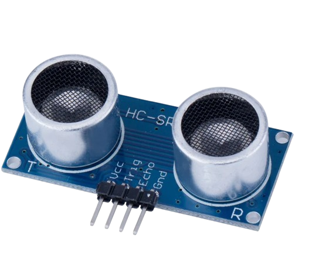
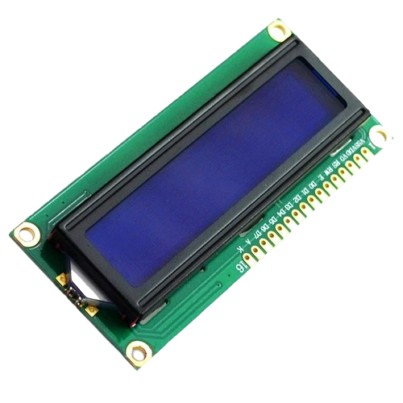
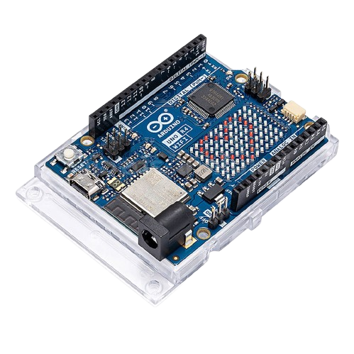

Smart Parking เป็นระบบตรวจสอบสถานะช่องจอดรถ โดยใช้ Ultrasonic Sensor จำนวน 3 ตัว ติดตั้งไว้ในแต่ละช่องจอด เซนเซอร์จะส่งคลื่นเสียงออกไปและรับคลื่นที่สะท้อนกลับมาเพื่อคำนวณระยะห่างระหว่างเซนเซอร์กับวัตถุ เมื่อระยะทางไม่เกิน 10 เซนติเมตร หากระบบตรวจพบจะถือว่ามีรถจอดอยู่และแสดงเครื่องหมายกากบาท แต่ถ้าระยะทางมากกว่า 10 เซนติเมตร ระบบจะแสดงเครื่องหมายถูกเพื่อบอกว่าช่องจอดว่าง Arduino จะประมวลผลข้อมูลจากเซนเซอร์ทั้ง 3 ตัว และแสดงผลบนหน้าจอ LCD 16×2 เพื่อให้ผู้ใช้งานทราบว่าช่องจอดใดว่างและช่องจอดใดมีรถจอดอยู่
เซ็นเซอร์วัดระยะทาง

จอแสดงผล

บอร์ดไมโครคอนโทรลเลอร์

แบบจำลองที่จอดรถที่ตรวจว่าช่องจอดว่างหรือไม่ด้วยเซนเซอร์อัลตราโซนิก แล้วแสดงผลบนหน้าเว็บแบบเรียลไทม์
| ช่อง | topic | ข้อความที่ส่ง |
|---|---|---|
| 1 | Smart_Parking/ |
Example : P1:FREE,P2:FREE,P3:FREE,AVAILABLE:3Example : P1:OCCUPIED,P2:OCCUPIED,P3:OCCUPIED,AVAILABLE:0
|
Broker: mqtt-dashboard.com (หน้าเว็บใช้พอร์ต 8884 แบบเข้ารหัส
บอร์ดใช้พอร์ต 1883)